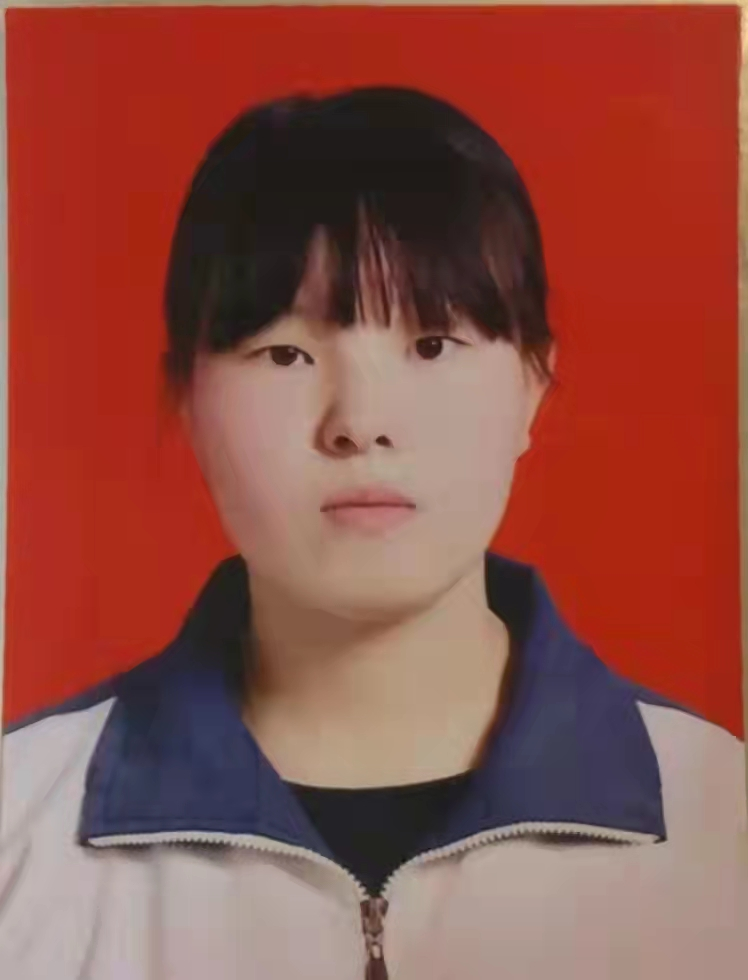

芦月庆（Yueqing Lu )
|  | 性别：女 |
| 出生年月：2006年1月 | |
| 籍贯：山西省大同市灵丘县 | |
| 专业：金融管理 | |
| 政治面貌：群众 | |
| 电子邮件：2791035079@qq.com |
教育背景
中学就读于山西省大同市灵丘县第一中学校，大学就读于天津现代职业技术学院。
主修课程
证券投资分析、个人理财、现代信息技术金融应用、货币银行学、金融财务职业职能、经济学原理、电子商务。
技能总结
英语六级、计算机二级
获奖经历
“山河已秋 人间勿晚 现代之美”摄影大赛三等奖、“山海关”杯品牌策划挑战赛二等奖、“山海关”杯品牌策划挑战赛三等奖。
兴趣爱好
手工、绘画、摄影
自我评价
本人做事比较认真，对工作和生活都抱有极大热情，踏实努力，喜欢稳定的生活。